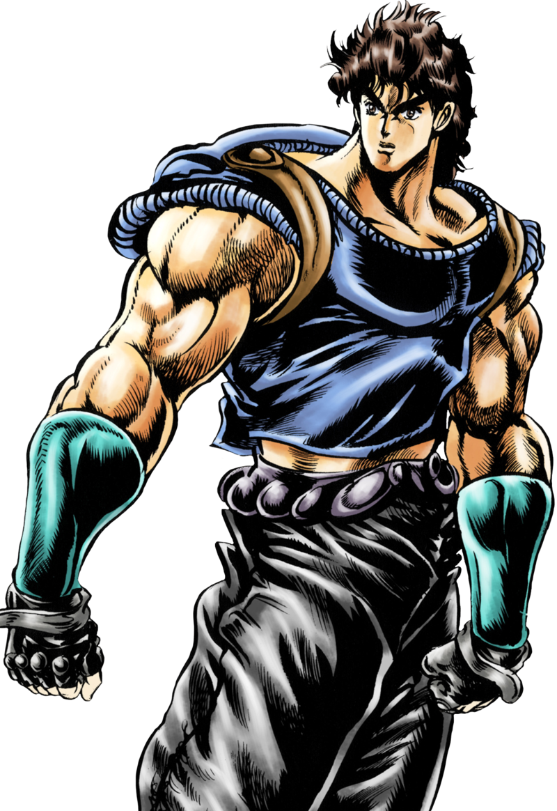
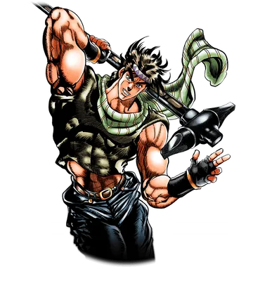
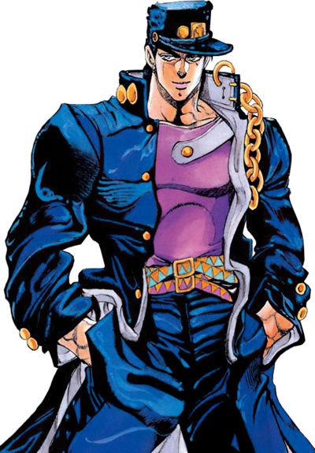
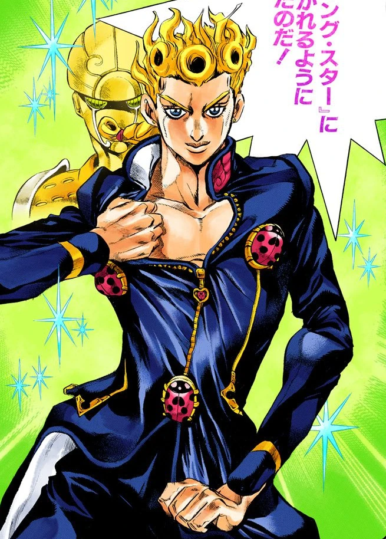
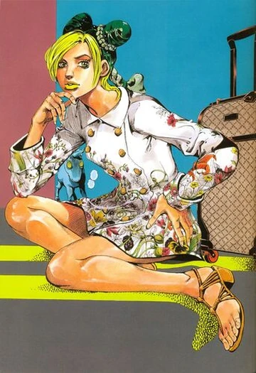

JoJo's Bizarre Adventure apresenta personagens com personalidades, habilidades e histórias diferentes. Cada protagonista possui seu próprio jeito de enfrentar desafios e proteger aqueles que são importantes para ele.
Parte: Phantom Blood

Jonathan é conhecido por sua bondade, honra e coragem. Mesmo enfrentando situações difíceis, ele procura agir com justiça e proteger as pessoas. É um personagem que representa força de caráter, determinação e respeito.
Parte: Battle Tendency

Joseph é extrovertido, brincalhão e muito esperto. Diferente de outros protagonistas, ele costuma usar criatividade, blefes e estratégias inesperadas para superar seus adversários. Apesar de seu jeito divertido, também demonstra coragem e preocupação com seus amigos.
Parte: Stardust Crusaders

Jotaro é reservado, sério e aparenta ser uma pessoa durona. Ele não costuma demonstrar seus sentimentos, mas se importa profundamente com sua família e seus amigos. É conhecido por sua inteligência, calma e força durante as batalhas.
Parte: Diamond is Unbreakable
Josuke é gentil, amigável e bastante leal às pessoas que ama. Ele se preocupa com sua cidade e com seus amigos, estando sempre disposto a ajudar. Porém, pode ficar muito irritado quando insultam seu cabelo, uma característica marcante de sua personalidade.
Parte: Golden Wind

Giorno é determinado, inteligente e possui um forte senso de justiça. Seu grande sonho é se tornar um Gang-Star e transformar a organização Passione. Ele demonstra muita confiança, planejamento e coragem para alcançar seus objetivos.
Parte: Stone Ocean

Jolyne é corajosa, independente e persistente. Ao longo de sua jornada, amadurece e se torna cada vez mais forte diante das dificuldades. Ela demonstra determinação, inteligência e um grande amor por aqueles que deseja proteger.